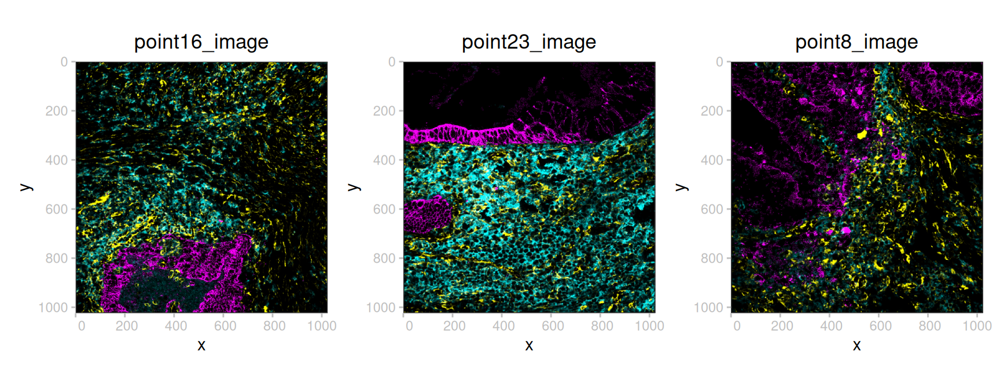
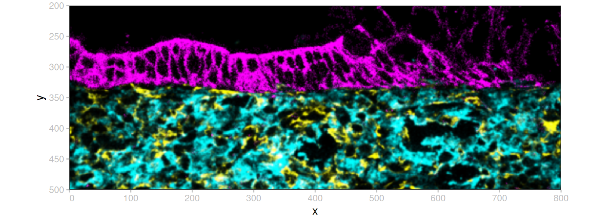
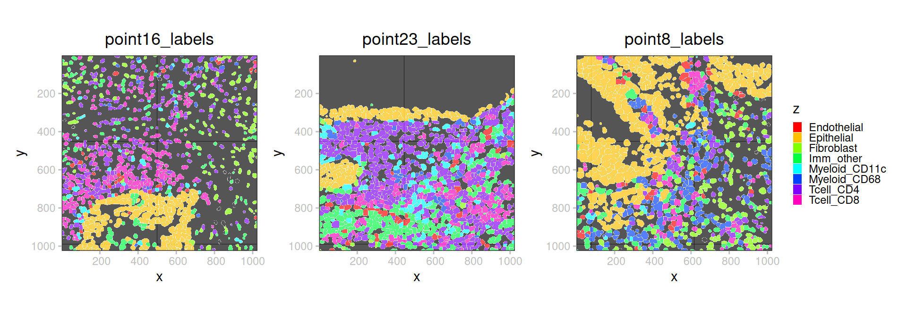
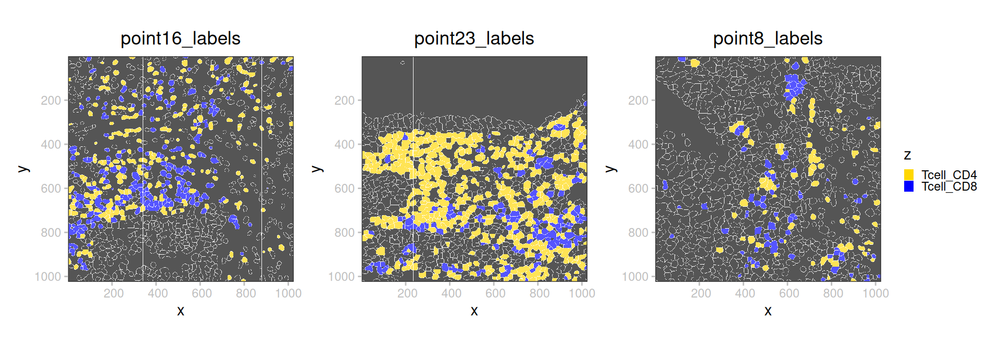

library(sf)
library(dplyr)
library(ggplot2)
library(patchwork)
library(spatialdataR)
library(SpatialData.data)
library(SpatialData.plot)MIBITOF
preamble
(sd <- SD.data_load("ColorectalCarcinomaMIBITOF"))class: SpatialData
- images(3):
- point16_image (3,1024,1024)
- point23_image (3,1024,1024)
- point8_image (3,1024,1024)
- labels(3):
- point16_labels (1024,1024)
- point23_labels (1024,1024)
- point8_labels (1024,1024)
- points(0):
- shapes(0):
- tables(1):
- table (36,3309) [point8_labels,point16_labels,point23_labels]
coordinate systems(3):
- point16(2): point16_image point16_labels
- point23(2): point23_image point23_labels
- point8(2): point8_image point8_labelsanalysis
cl <- rep(list(c(0, 1/3)), 3) # contrast limits
ps <- lapply(imageNames(sd), \(i) plotSpatialData() + plotImage(x=sd, i=i, cl=cl) + ggtitle(i))
wrap_plots(ps, nrow=1) & theme(legend.position="none")
bb <- list(xmin=0, xmax=800, ymin=200, ymax=500)
(sp <- crop(sd, bb, j="point23"))class: SpatialData
- images(1):
- point23_image (3,300,800)
- labels(1):
- point23_labels (300,800)
- points(0):
- shapes(0):
- tables(1):
- table (36,1241) [point8_labels,point16_labels,point23_labels]
coordinate systems(1):
- point23(2): point23_image point23_labelsplotSpatialData() + plotImage(x=sp, cl=cl)
(se <- element(sd, "table"))class: SingleCellExperiment
dim: 36 3309
metadata(0):
assays(1): X
rownames(36): ASCT2 ATP5A ... XBP1 vimentin
rowData names(0):
colnames(3309): 9376-1 9377-1 ... 4273-0 4274-0
colData names(10): row_num point ... Cluster batch
reducedDimNames(3): spatial X_scanorama X_umap
mainExpName: NULL
altExpNames(0):base::table(ks <- se$Cluster)
Endothelial Epithelial Fibroblast Imm_other Myeloid_CD11c
115 746 270 488 168
Myeloid_CD68 Tcell_CD4 Tcell_CD8
259 799 464 is <- labelNames(sd)
ps <- lapply(is, \(i)
plotSpatialData() +
ggtitle(i) +
plotLabel(x=sd, i=i, a=2/3,
c="Cluster", na="black",
pal=rainbow(nlevels(ks))))
wrap_plots(ps, nrow=1, guides="collect")
sp <- query(sd, i="table", grepl("Tc", Cluster))
base::table(table(sp)$Cluster)
Tcell_CD4 Tcell_CD8
799 464 # TODO: this is wrong!
is <- labelNames(sd)
ps <- lapply(is, \(i)
plotSpatialData() +
ggtitle(i) +
plotLabel(x=sp, i=i, a=2/3,
c="Cluster", na="black",
pal=c("gold", "blue")))
wrap_plots(ps, nrow=1, guides="collect")
appendix
Notesession
sessionInfo()R version 4.6.1 (2026-06-24)
Platform: x86_64-pc-linux-gnu
Running under: Ubuntu 24.04.5 LTS
Matrix products: default
BLAS: /usr/lib/x86_64-linux-gnu/openblas-pthread/libblas.so.3
LAPACK: /usr/lib/x86_64-linux-gnu/openblas-pthread/libopenblasp-r0.3.26.so; LAPACK version 3.12.0
locale:
[1] LC_CTYPE=C.UTF-8 LC_NUMERIC=C LC_TIME=C.UTF-8
[4] LC_COLLATE=C.UTF-8 LC_MONETARY=C.UTF-8 LC_MESSAGES=C.UTF-8
[7] LC_PAPER=C.UTF-8 LC_NAME=C LC_ADDRESS=C
[10] LC_TELEPHONE=C LC_MEASUREMENT=C.UTF-8 LC_IDENTIFICATION=C
time zone: UTC
tzcode source: system (glibc)
attached base packages:
[1] stats graphics grDevices datasets utils methods base
other attached packages:
[1] SpatialData.plot_0.99.9 SpatialData.data_0.99.10 spatialdataR_0.99.44
[4] patchwork_1.3.2 ggplot2_4.0.3 dplyr_1.2.1
[7] sf_1.1-3
loaded via a namespace (and not attached):
[1] tidyselect_1.2.1 grumpy_0.1.1
[3] blob_1.3.0 farver_2.1.2
[5] filelock_1.0.3 R.utils_2.13.0
[7] S7_0.2.2 fastmap_1.2.0
[9] SingleCellExperiment_1.35.2 BiocFileCache_3.3.0
[11] duckdb_1.5.6.9002 digest_0.6.39
[13] lifecycle_1.0.5 paws.storage_0.11.0
[15] RSQLite_3.53.3 magrittr_2.0.5
[17] compiler_4.6.1 rlang_1.3.0
[19] tools_4.6.1 yaml_2.3.12
[21] knitr_1.52 S4Arrays_1.13.2
[23] htmlwidgets_1.6.4 bit_4.6.0
[25] classInt_0.4-11 curl_8.0.0
[27] reticulate_1.47.0 DelayedArray_0.39.8
[29] xml2_1.6.0 RColorBrewer_1.1-3
[31] abind_1.4-8 KernSmooth_2.23-27
[33] withr_3.0.3 purrr_1.2.2
[35] BiocGenerics_0.59.12 R.oo_1.27.1
[37] grid_4.6.1 stats4_4.6.1
[39] e1071_1.7-17 scales_1.4.0
[41] SummarizedExperiment_1.43.0 cli_3.6.6
[43] rmarkdown_2.32 generics_0.1.4
[45] cachem_1.1.0 DBI_1.3.0
[47] proxy_0.4-29 BiocManager_1.30.27
[49] XVector_0.53.0 matrixStats_1.5.0
[51] vctrs_0.7.3 Matrix_1.7-6
[53] jsonlite_2.0.0 IRanges_2.47.5
[55] S4Vectors_0.51.10 bit64_4.8.6
[57] RBGL_1.89.0 ggnewscale_0.5.2
[59] units_1.0-1 glue_1.8.1
[61] ZarrArray_1.1.7 gtable_0.3.6
[63] Rarr_2.1.44 GenomicRanges_1.65.4
[65] tibble_3.3.1 pillar_1.11.1
[67] htmltools_0.5.9 Seqinfo_1.3.2
[69] graph_1.91.0 dbplyr_2.6.0
[71] R6_2.6.1 httr2_1.3.0
[73] wk_0.9.5 evaluate_1.0.5
[75] lattice_0.23-1 Biobase_2.73.2
[77] R.methodsS3_1.8.2 png_0.1-9
[79] duckspatial_1.2.1 memoise_2.0.1
[81] renv_1.3.1 paws.common_0.9.0
[83] class_7.3-24 Rcpp_1.1.2
[85] SparseArray_1.13.4 anndataR_1.3.2
[87] xfun_0.61 MatrixGenerics_1.25.0
[89] pkgconfig_2.0.3